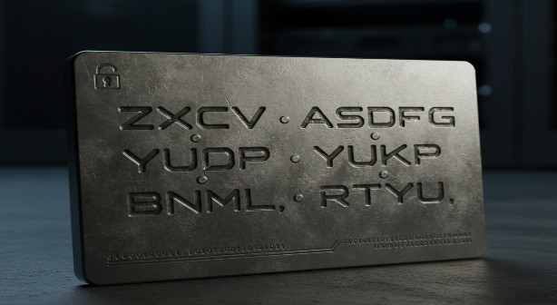

DYOR — Этот материал носит исключительно образовательный характер. Он не является финансовым, инвестиционным или юридическим советом. Криптовалюты — высоко волатильный актив. Вы несёте полную ответственность за свои действия. Мы не рекомендуем, не продвигаем и не гарантируем никакие активы, кошельки или сервисы.
Как создать крипто кошелёк и сохранить seed-фразу
Ты уже понял.
Крипта — это не "цифровые деньги".
Это твоя собственность, которой никто не управляет, кроме тебя — и чтобы эта собственность не исчезла в один клик, тебе нужен крипто кошелёк, где ты — единственный хозяин ключей.
1. Зачем нужен кошелёк и что такое seed-фраза
Представь сейф с золотом. У него есть замок. У замка — ключ. Потерял ключ — потерял золото. Никакой службы поддержки. Никакого "восстановить пароль".
Кошелёк в криптомире — это твой сейф. А seed-фраза — твой мастер-ключ. Обычно это 12 или 24 простых слова, сгенерированных при создании кошелька.
Важно: это не логин и не пароль.
— Логин и пароль можно восстановить.
— Seed-фразу — никак. Если она утеряна, активы утеряны навсегда.
— Если её украдут — украдут всё.
2. Пошагово: установка и создание кошелька
Не пугайся — это проще, чем настроить смартфон.
- Скачай официальное приложение (например, Trust Wallet или MetaMask) только из App Store или Google Play. Никаких ссылок из Telegram и "друга в лс".
- Запусти приложение и выбери "Создать новый кошелёк" (не "Импортировать"!).
- Прими условия использования.
- Приложение сгенерирует seed-фразу — 12 или 24 слова. Не нажимай "Далее", пока не запишешь их.
- Подтверди фразу: выбери слова в правильном порядке.
- Придумай надёжный пароль для разблокировки кошелька на устройстве. Он защищает от физического доступа, но не заменяет seed-фразу.
- Готово. Ты — полноправный владелец.
3. Как правильно записать и хранить seed-фразу
Ты записал? Отлично. Теперь не испорть всё глупостью.
Можно и нужно:
- Записать от руки на плотной бумаге.
- Перенести на металлическую пластину (выдерживает огонь, воду, время).
- Хранить в нескольких надёжных местах: сейф, родственник, банковская ячейка.
Нельзя ни при каких обстоятельствах:
- Делать фото или скриншот.
- Сохранять в облаке (Google Drive, iCloud, Telegram "мне").
- Писать в заметках на телефоне.
- Показывать кому-либо, даже "админу поддержки".
Любое цифровое копирование — риск взлома. Seed должна жить только в офлайне.

4. Безопасность: краткий чек-лист
- Включи двухфакторную аутентификацию (2FA) везде, где можно.
- Установи антивирус и менеджер паролей.
- Никогда не переходи по ссылкам из Telegram/Discord — фишинг убивает больше, чем волатильность.
- Обновляй ПО и кошелёк регулярно.
- Не подключай кошелёк к непроверенным dApps — есть риск подписания вредоносной транзакции.
Это не паранойя. Это базовый уровень гигиены в криптомире.
5. FAQ
Можно сфотографировать seed?
Нет. Ни в коем случае. Фото = цифровая копия = утечка.
Что делать при утере seed-фразы?
Ничего. Восстановить нельзя. Это как сжечь наличные.
Подходит ли один seed для нескольких сетей?
Да. Одна фраза даёт доступ ко всем твоим активам во всех поддерживаемых сетях (Ethereum, BSC, Solana и др.).
Ты не просто создал кошелёк. Ты стал владельцем.
И с этого момента — только от тебя зависит, останется ли твоя крипта с тобой.
Пока вы читали эту статью, где-то в мире ещё один новичок сохранил свою seed-фразу в облако. Или, может быть, наоборот — вырезал слова на металле и спрятал в сейфе. Надеюсь, это был ты.
Если ты только начинаешь — сохрани этот текст. Он часть образовательной воронки: не для продажи, а чтобы ты не потерял всё в первый же день.
P.S. от холодного кошелька: "Я не умею говорить. Но если ты меня уронишь в огонь — я останусь. А ты — запомни слова".
Обновлено: 04.12.2025
Материал носит образовательный характер и не является инвест советом.
#КриптоБезопасность #SeedФраза #Кошелёк #Крипта #Onboarding #DYOR #КриптоЛампа